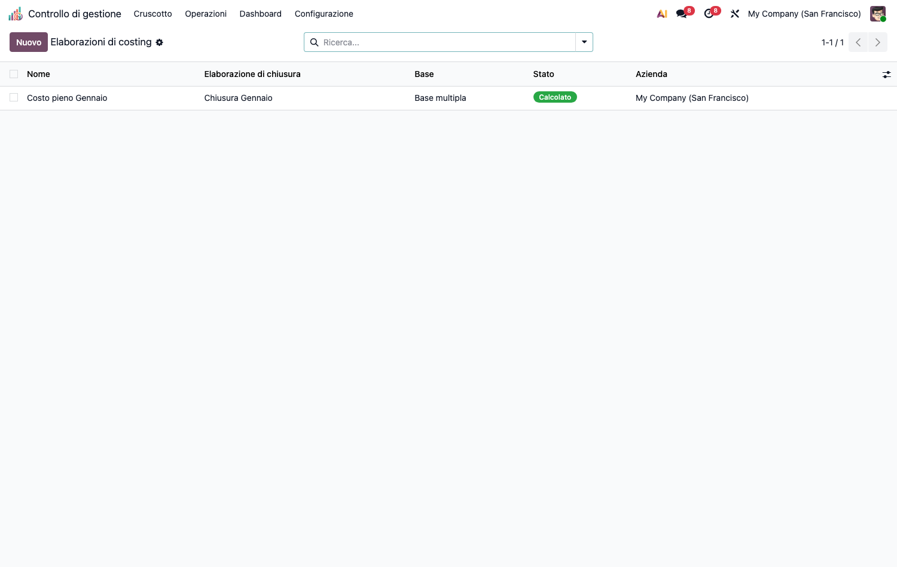
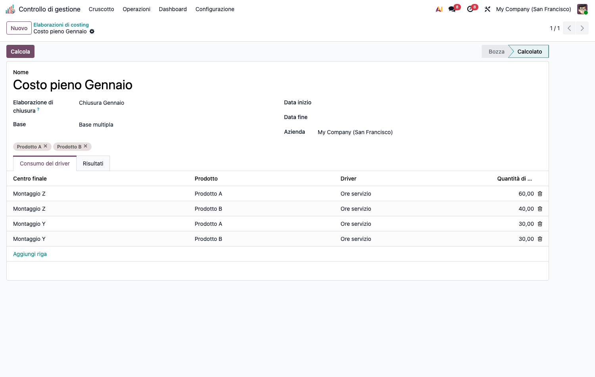

<section class="oe_container">
<div class="oe_row oe_spaced">
<div class="oe_span12">
<h1>CMC – Costo Pieno / Full Costing (cmc_full_costing)</h1>
<p>Modulo capillare della suite CMC. Dipende da <code>cmc_base</code>.</p>
<h2>Obiettivo</h2>
<p>Calcolare il <strong>costo pieno di prodotto</strong> su base unica o multipla, articolato nei <strong>4 livelli</strong>:</p>
<ol><li><strong>Costo primo</strong> (materie prime + manodopera diretta, da <code>standard_price</code>)</li><li><strong>Costo industriale</strong> (+ costi indiretti di produzione dal ribaltamento)</li><li><strong>Costo complessivo</strong> (+ costi di periodo: commerciali, amministrativi)</li><li><strong>Costo economico-tecnico</strong> (+ costi figurativi: interessi di computo, ecc.)</li></ol>
<p>Include la riconciliazione vs <code>standard_price</code> con evidenza degli scostamenti.</p>
<p></p>
<h2>Configurazione (step-by-step)</h2>
<ol><li>Installa <code>cmc_full_costing</code> (richiede <code>cmc_base</code>).</li><li>Assicurati di avere una <strong>base di costo pronta</strong>: centri, costi registrati e un</li></ol>
<p><strong>ribaltamento</strong> eseguito (vedi README di <code>cmc_base</code>).</p>
<ol><li>Imposta il <strong>prezzo standard</strong> dei prodotti (<em>Vendite/Inventario › Prodotto › Costo</em>) — alimenta il costo primo.</li><li>(Opzionale) In <em>Operazioni › Costo pieno › Costi figurativi</em> dichiara i costi figurativi (metodo <em>lump</em> o <em>interesse</em> su capitale × tasso) da imputare al livello economico-tecnico.</li></ol>
<h2>Utilizzo (step-by-step)</h2>
<ol><li>Vai in <strong>Operazioni › Costo pieno › Full Costing</strong> → <strong>Nuovo</strong>.</li><li>Collega il <strong>Ribaltamento</strong> di riferimento (fonte dei costi indiretti).</li><li>Scegli la <strong>Base</strong>: <em>unica</em> (un solo driver) o <em>multipla</em> (un driver per centro).</li><li>Seleziona i <strong>prodotti</strong> e compila le righe <em>centro × prodotto × driver × quantità</em>.</li><li>Premi <strong>Calcola</strong>. Il risultato mostra i 4 livelli di costo per prodotto, con tracciabilità delle quote e lo scostamento vs prezzo standard.</li></ol>
<p></p>
<h2>Note</h2>
<ul><li>Estratto storicamente da <code>cmc_base</code>: contiene <code>cmc.costing.run/line/result/quota</code> + <code>cmc.costing.config</code> (tracciabilità livelli) + costi figurativi.</li><li>I costi di periodo (centri marcati <em>di periodo</em> in <code>cmc_base</code>) entrano solo dal livello complessivo in poi, restando fuori dal ribaltamento industriale.</li></ul>
</div>
</div>
</section>
